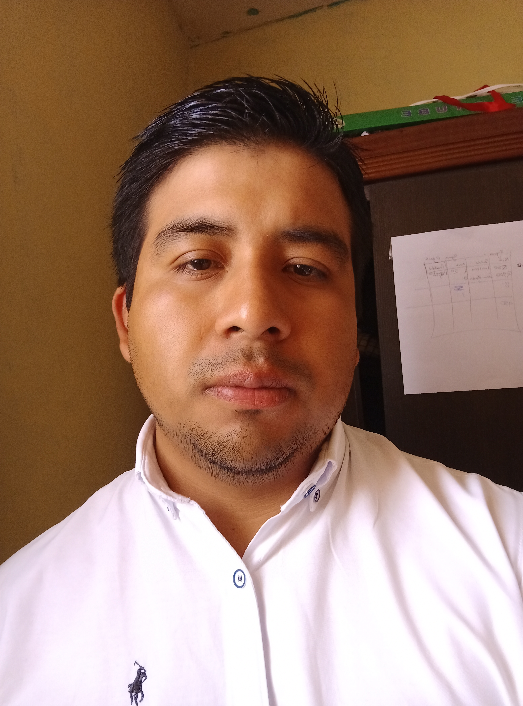

Desde que tengo recuerdos, me apasiona aprender y comprender cómo funcionan las máquinas. Recientemente me interesa comprender las ramas de la Ingeniería, especificamente la Ing. en Sistemas de Información, la cual curso actualmente.
Universidad Mariano Gálvez
Promedio 2021: 77.80 Setenta y Siete punto Ochenta
Promedio 2024: 77.75 Setenta y Siete punto Setenta y Cinco
Jornada vespertina | 2021 - 2022 y 2025
Durante los primeros 2 años, estuve en clases de manera virtual, lo que permitió conocer a personas para luego volver a reconstruir conexiones en el 2025, año en que volví a la jornada vesperina.
Principales logros | 2021
Al iniciar mi vida universitaria, obtuve un puntaje alto en la materia de Precalculo. También realicé mi primer menú interactivo, en el curso de Algoritmos
Fuera de aulas
Colegio Mixto Preuniversitario Galileo Galilei
2,017 - 2,020 / Aulas del liceo ubicado en la Antigua Guatemala
Elección de la carrera, aplicación y graduación
Side Project | 2025
El proyecto de RRHH es una propuesta que desarrollé para explorar cómo podría organizarse y gestionarse la vida laboral de las personas dentro de una empresa ficticia. A través de este entorno simulado, el sistema permite llevar un control claro de aspectos como la asistencia, los permisos, las vacaciones y la información general del personal, buscando reflejar situaciones reales de manera sencilla y comprensible. Más que una herramienta operativa, el proyecto funciona como un espacio de prueba donde se analizan decisiones, flujos de trabajo y dinámicas humanas propias del ámbito laboral, sin depender de un contexto real.
Proyecto Side Project y Propuesta para graduación | 2025
El proyecto de monitoreo de humedad consiste en una solución sencilla pensada para el hogar, creada con un dispositivo básico y fácil de entender por cualquier lector. Su objetivo es medir la humedad del suelo de una maceta o pequeño jardín y mostrar esa información de forma clara, ayudando a saber cuándo es necesario regar y cuándo no. El sistema simula el cuidado diario de las plantas en casa, permitiendo observar cómo pequeños cambios en el entorno influyen en su estado, y promoviendo una relación más consciente y práctica con el cuidado del agua y de las plantas.